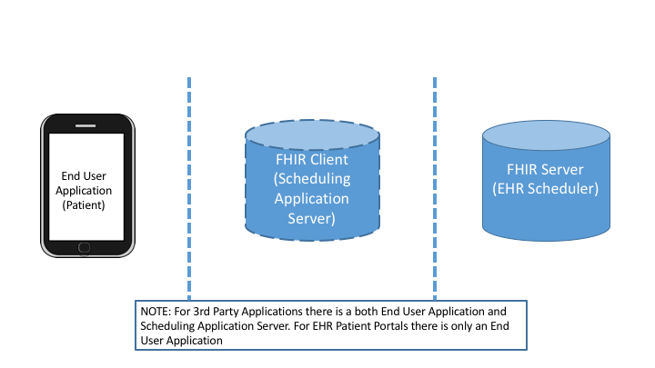

This Implementation Guide is published by the Argonaut Project. To submit formal requests for changes use Argonaut Scheduling GitHub repository Issues Tracker.
These requirements were developed and defined by the Argonaut pilot implementations.
Scope
Patient Based Scheduling:
Patient searches for available appointment times for a service or procedure through an organization’s on-line service (“patient portal”) or a third-party application.
Includes scenarios when patient is a new patient or an existing patient.
Only those procedures/specialties/services based on the following “simple” inputs will be available:
Provider retrieves their existing appointments for all patients
Future Scope
Throughout the development of the Argonaut Scheduling Guide several additional important items were reviewed for robust scheduling implementations. This page summarizes items under development, or things that should be considered for future efforts.
“Discovery Operation”
Asks the key questions - What Service(/specialty/provider) are bookable?
This information is Static and is easy to prefetch.
It can be used as a filter when searching for appointment availability reducing the burden on server.
Consumer Facing apps can use this information to create appointments from slots.
in the future the Provider Directory (i.e., “common catalog”) can supply much of this key services information
In our initial scope, only those specialties/services based on the “simple inputs” - available times, location, specialty- will be available. Instead of a separate FHIR operation will document the need for an off-line exchange to coordinate the services/per provider (e.g. a spreadsheet)
Additional input requirements Operation
As stated above, in our initial scope, only those specialties/services based on the “simple inputs” - available times, location, specialty- will be available. Additional patient input and more advanced conflict checking which has been deferred to future scope. Information like additional patient demographics, chief complaint/indication and other details to help with identifying the available appointments.
for example an Appointment$input operation could precede the Appointment Availability Operation to discover what inputs are needed for the service. This operation would return a questionnaire to be filled out by the End User and submitted with the Appointment Availability Operation. Alternatively the Operation#find operation could return an OperationOutcome informing the client that information is needed and a questionnaire to be completed first.
Amending an appointment
Need to establish what if anything the consumer can update.
In FHIR, booking an appointment typically includes two main actors: the FHIR Server serving as the EHR scheduler and a Client as a scheduling application. For the patient based scheduling, the actors are depicted in figure 1 below. Note that for the 3rd Party Application the scheduling application is both server for the end user application and a client of the FHIR Server. In the patient portal use case the the end user application interacts directly with the FHIR Server.
file:///assets/images/diagrams/Slide27.png
Figure 1: Actors for Patient Based Scheduling.

For the provider based scheduling, the actors are depicted in figure 2 below. The referring provider’s scheduling application is the client and may schedule with or without patient input.
file:///assets/images/diagrams/Slide19.png
Figure 2: Actors for Provider Based Scheduling.
Assumptions
Third Party applications
A third party patient scheduling application may ‘pre-fetch’ open slots and create appointments or it may fetch open appointments in real time.
Login and Trust
An client application has been authorized by the health system.
Uses SMART on FHIR authorization for apps that connect to EHR data.
If the patient is successfully registered via a third-party application or logged into an EHR’s patient portal, the patient ID is returned or known.
‘Open-scheduling’: Authorized applications can search for available appointments without Server having to “know” the patient.
Later on in interaction a “patient level authorization” in order to create a new account and complete the appointment will be required. The technical details for this are out of scope for this project.
Alternate approaches are out of scope for this project.
Rescheduling and appointment is a two step process of cancelling and rebooking.
Security
For general security consideration refer to the Security section in the US Core Implementation Guide. See the Assumptions section above for a discussion of login and trust.
Site Contents
Home Page
Introduction
Scope
Future Scope
Actors
Assumptions
Security
Where to start/TOC
Use Cases
Patient Based Scheduling
Scenario 1: Patient Portal/Scheduling for new or existing patient
Patient login/registration
Search for open appointments
Hold appointment
Book appointment
Scenario 2: Open Scheduling for new patient
Patient registration (option)
Search for open appointments
Hold appointment
Patient registration (option)
Book appointment
Scenario 3: Prefetching Open Slots for Scheduling patient
exchange logic
initial load of open slots
update open slots
Patient login/registration (option)
Search for open appointments
Hold appointment
Patient login/registration (option)
Book appointment
Cancelling appointment
Retrieving appointments
Provider based Scheduling
Scenario 1: Scheduling for existing patient across systems
Patient Match
Search for open appointments
Hold appointment
Book appointment
Scenario 2: Scheduling for new patient across systems
Patient registration (option)
Search for open appointments
Hold appointment
Patient registration (option)
Book appointment
Scenario 3: Scheduling for existing patient within system
igName : Title of the implementation Guide (defined in ig.xml) - {{site.data.fhir.igName}} = Argo-Scheduling
path : path to the main FHIR specification (defined in ig.json)- {{site.data.fhir.path}} = http://hl7.org/fhir/STU3
canonical : canonical path to this specification (defined in ig.json)- {{site.data.fhir.canonical}} = http://fhir.org/guides/argonaut-scheduling
dependency url - “uscore” : Base url of a dependency implementation Guide (defined in ig.json) - {{site.data.fhir.uscore}} = http://hl7.org/fhir/us/core/stu1/
errorCount : number of errors in the build file (not including HTML validation errors) - {{site.data.fhir.errorCount}} = 99
version : version of FHIR - {{site.data.fhir.version}} = 3.0.1
revision : revision of FHIR - {{site.data.fhir.revision}} = 11917
totalFiles : total number of files found by the build - {{site.data.fhir.totalFiles}} = 36
processedFiles : number of files genrated by the build - {{site.data.fhir.processedFiles}} = 1
genDate : date of generation (so date stamps in the pages can match those in the conformance resources) - {{site.data.fhir.genDate}} = Thu, Nov 16, 2017 17:24-0800